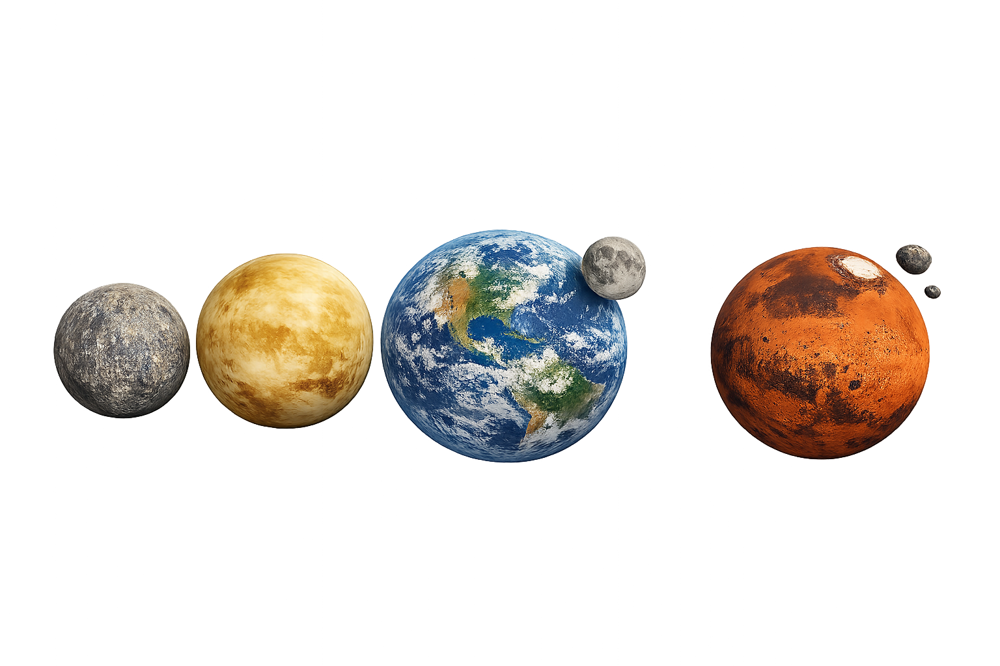
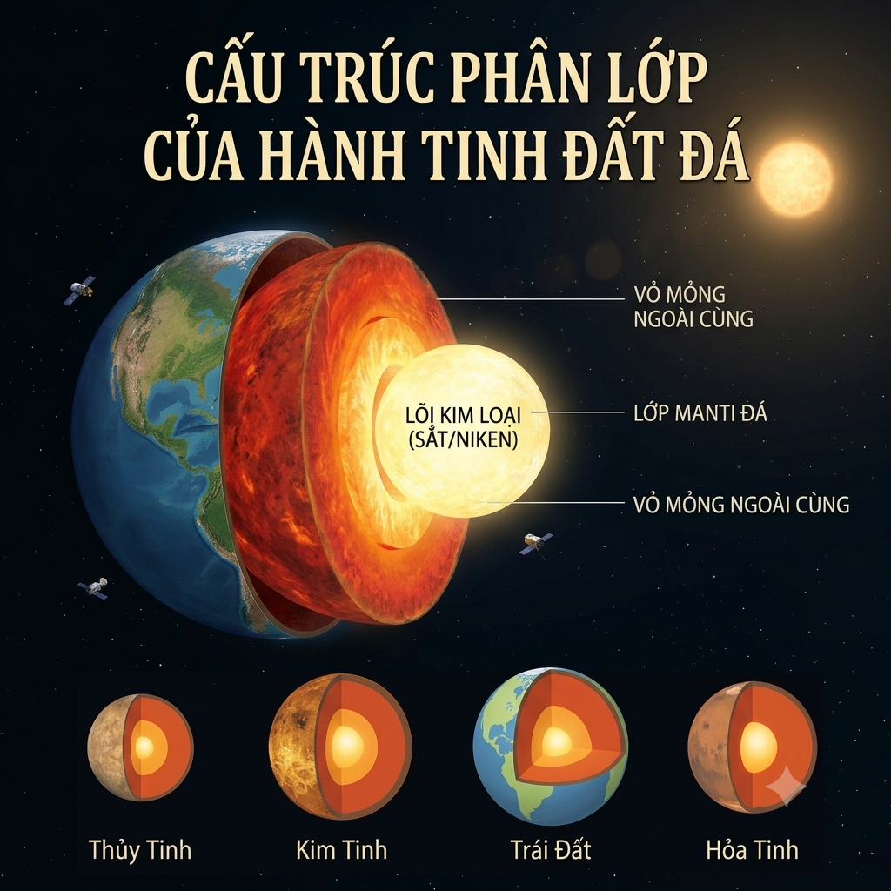
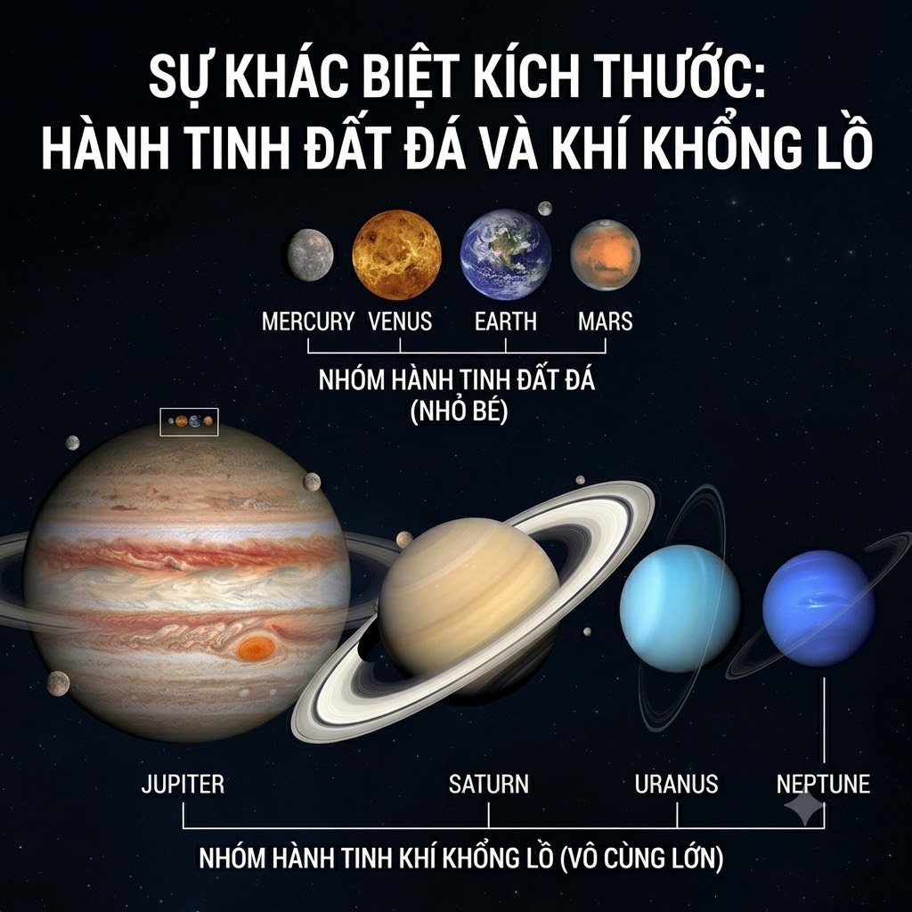
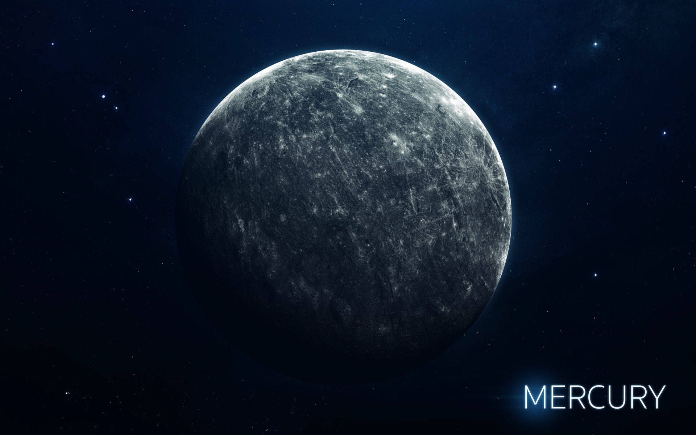
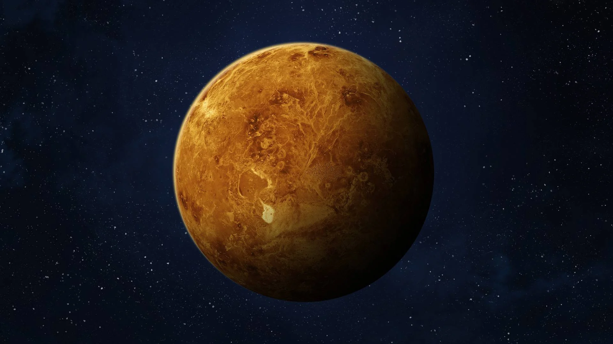
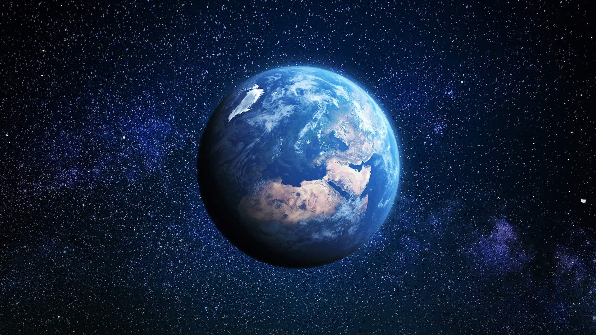
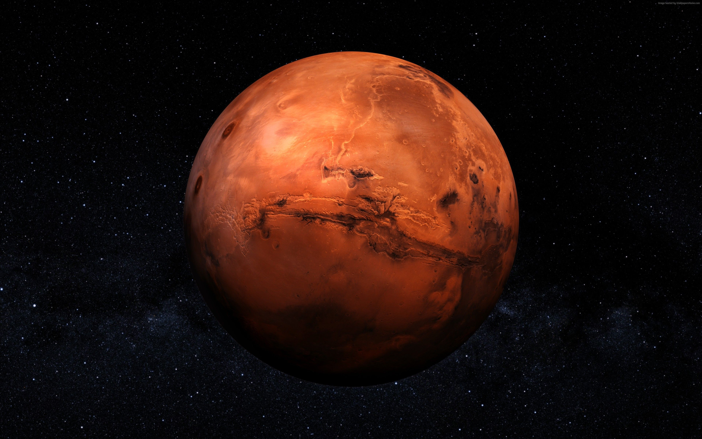

GIỚI THIỆU
Hành tinh đất đá là gì?
Hành tinh đất đá là nhóm các hành tinh có bề mặt rắn chắc được cấu tạo chủ yếu từ đá silicat hoặc kim loại. Khác với các hành tinh khí khổng lồ, nhóm hành tinh này có mật độ vật chất cao, lõi kim loại đặc và sở hữu các địa hình đặc trưng như hẻm núi, núi lửa hay hố thiên thạch.

Ít vệ tinh tự nhiên
Nhóm hành tinh này có rất ít hoặc không có vệ tinh quay quanh (Sao Thủy và Sao Kim không có, Trái Đất có 1, Sao Hỏa có 2) và hoàn toàn không có hệ vành đai.

Bề mặt rắn chắc
Các hành tinh này đều có bề mặt cố định bằng đá silicat và địa hình hiểm trở như núi lửa, hẻm núi, hố thiên thạch, cho phép đáp tàu vũ trụ lên được.

Cấu trúc phân lớp
Tất cả đều có cấu tạo tương đồng từ trong ra ngoài: một lõi kim loại bằng sắt ở trung tâm, bao bọc bởi lớp manti đá và một lớp vỏ mỏng ngoài cùng.

Kích thước nhỏ gọn
So với các hành tinh khí khổng lồ, nhóm hành tinh đất đá có kích thước và khối lượng nhỏ hơn nhiều, nhưng lại có mật độ vật chất (khối lượng riêng) cao hơn.
Sao Thủy
Hành tinh của những thái cực nhiệt độ
Do ở gần Mặt Trời nhất nhưng lại gần như không có bầu khí quyển để giữ nhiệt hay điều hòa nhiệt độ, ban ngày ở Sao Thủy có thể nóng lên tới 430°C, nhưng ban đêm lại tụt dốc thê thảm xuống -180°C.
Đường kính
4.879 km
Vệ tinh
0
Chu kỳ quay
59 ngày Trái Đất
Nhiệt độ
-180°C đến 430°C
Sao Kim
Lò thiêu của Hệ Mặt Trời
Dù không gần Mặt Trời bằng Sao Thủy, nhưng Sao Kim sở hữu bầu khí quyển dày đặc khí nhà kính ($CO_2$). Điều này tạo ra một hiệu ứng nhà kính mất kiểm soát, giữ nhiệt độ bề mặt luôn ở mức khoảng 460°C (đủ sức nung chảy chì) cả ngày lẫn đêm.
Đường kính
12.104 km
Vệ tinh
0
Chu kỳ quay
243 ngày Trái Đất
Nhiệt độ
460°C
Trái Đất
Hành tinh của sự sống nơi có nước ở thể lỏng
Trái Đất nằm trong "vùng ở được" (Goldilocks zone), sở hữu bầu khí quyển hoàn hảo và lượng nước lỏng dồi dào chiếm 71% bề mặt, tạo điều kiện cho hàng triệu loài sinh vật sinh sôi, phát triển.
Đường kính
12.756 km
Vệ tinh
1 - Mặt Trăng
Chu kỳ quay
24 giờ
Nhiệt độ
-89°C đến 58°C
Sao Hỏa
Hành tinh Đỏ
Toàn bộ bề mặt Sao Hỏa được bao phủ bởi một lớp bụi giàu sắt oxit, khiến nó hiện lên bầu trời như một đốm lửa đỏ rực. Đây cũng là nơi có ngọn núi lửa Olympus Mons cao nhất Hệ Mặt Trời (gấp 3 lần núi Everest).
Đường kính
6.792 km
Vệ tinh
2 - Phobos & Deimos
Chu kỳ quay
24.6 giờ
Nhiệt độ
-140°C đến 20°C
KHÁM PHÁ
Dòng thời gian khám phá
Sao Thủy
Được các nhà chiêm tinh Babylon cổ đại ghi nhận lần đầu tiên trong lịch sử trên các tấm đất sét MUL.APIN.
Trái Đất
Nicolaus Copernicus công bố thuyết Nhật tâm, chính thức định nghĩa Trái Đất là một hành tinh chuyển động.
Sao Kim
Galileo Galilei dùng kính thiên văn phát hiện các pha tròn khuyết, chứng minh hành tinh này quay quanh Mặt Trời.
Sao Hỏa
Christiaan Huygens phát hiện vùng tối Syrtis Major bằng kính thiên văn và phác thảo bản đồ bề mặt đầu tiên.
SO SÁNH
Thông số các hành tinh đất
| Hành tinh | Đường kính | Số vệ tinh | Nhiệt độ | Chu kỳ quay |
|---|---|---|---|---|
| Sao Thủy | 4.879 km | 0 | -180°C đến 430°C | 59 ngày Trái Đất |
| Sao Kim | 12.104 km | 0 | 460°C | 243 ngày Trái Đất |
| Trái Đất | 12.756 km | 1 | -89°C đến 58°C | 24 giờ |
| Sao Hỏa | 6.792 km | 2 | -140°C đến 20°C | 24.6 giờ |
Fun Facts
Những điều thú vị
Năm ngắn hơn ngày
Sao Thủy mất 88 ngày Trái Đất để đi hết một vòng quanh Mặt Trời (1 năm). Nhưng nó mất tới 176 ngày Trái Đất để hoàn thành một chu kỳ ngày-đêm (1 ngày mặt trời). Nghĩa là ở đây, bạn sẽ đón sinh nhật 2 lần trước khi một ngày khép lại.
Ngôi sao nổi loạn
Trong khi hầu hết các hành tinh đều quay quanh trục theo chiều kim đồng hồ, Sao Kim lại một mình một ngựa quay theo chiều ngược lại. Nếu sống ở Sao Kim, sẽ thấy Mặt Trời mọc ở hướng Tây và lặn ở hướng Đông.
Kẻ mạo danh
Trái Đất là hành tinh duy nhất trong Hệ Mặt Trời không được đặt tên theo một vị thần La Mã hay Hy Lạp (như Mercury, Venus, Mars). Từ "Earth" trong tiếng Anh cổ chỉ đơn giản có nghĩa là "mặt đất".
Vệ tinh bị nguyền rủa
Phobos - một trong hai vệ tinh của sao Hỏa, đang bị lực hấp dẫn của Sao Hỏa kéo lại gần với tốc độ 1,8 mét mỗi thế kỷ. Dự kiến trong 30-50 triệu năm nữa, nó sẽ đâm sầm vào Sao Hỏa hoặc bị xé toạc thành một vành đai vụn đá.
Thư viện
Hình ảnh các hành tinh

Sao Thủy
Nơi nhiệt độ giữa ngày và đêm có sự chênh lệch đáng sợ nhất Hệ Mặt Trời

Sao Kim
Kẻ nỗi loạn

Trái Đất
Hành tinh có nước dạng lỏng và những sinh vật thú vị

Sao Hỏa
Nơi có ngọn núi cao nhất Hệ Mặt Trời


Planet Journey
Tạo tài khoản mới
Đăng ký để khám phá những điểu thú vị về vũ trụ!